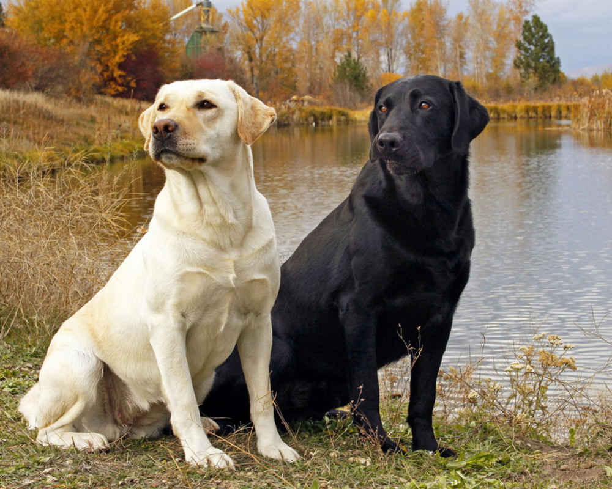

Лабрадор
Точне походження однієї з найпопулярніших порід у світі — лабрадора не встановлено, але відомо, що предками лабрадора були собаки північноамериканських індіанців. Вони відмінно плавають і пірнають, в ті часи їх основне застосування було допомагати рибалкам витягати тенета. Вперше собак невідомої породи європейці побачили на острові Ньюфаундленд (Канада) на початку 19 століття і назвали їх «Ньюфаундленд Святого Джонса». Це були незамінні помічники: допомагали при лові риби, рятували людей у шторм, перевозили візки з вантажем, на полюванні приносили дичину з води. У 1830 році були завезені до Великої Британії, де стали популярні як польові мисливські собаки і апортировщики дичини. У процесі формування породи використовували пойнтера і деяких інших собак. До 1870 року склалася порода лабрадор-ретривер. У 1903 році вона була визнана як самостійна Англійським клубом собаківництва.